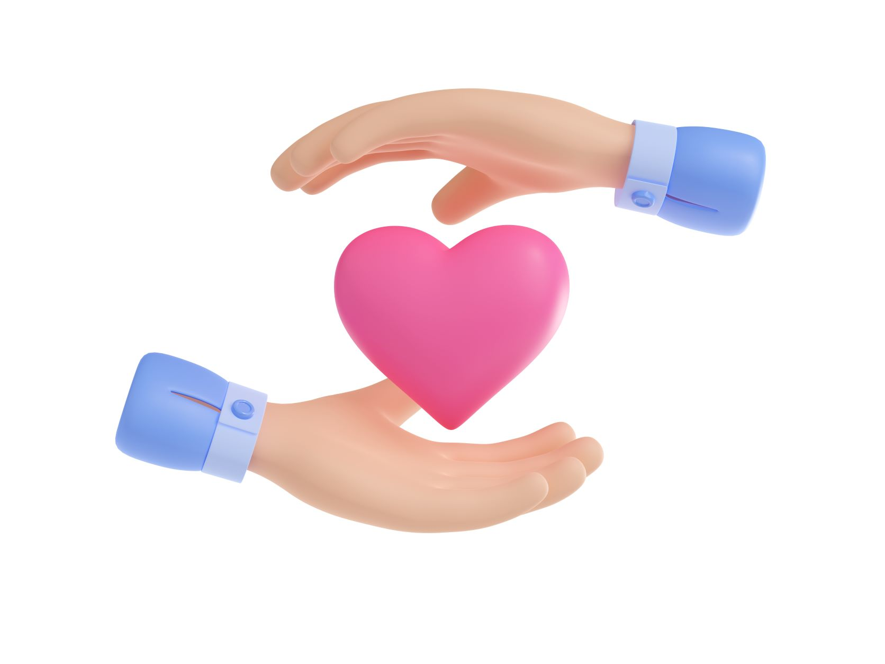
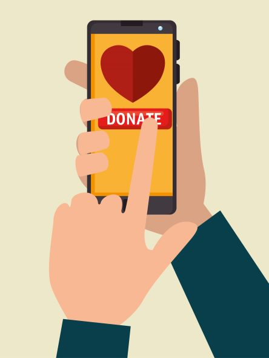

Givesome Hands
The perfect place to connect with fundraising.
Charity is the pure love of Christ
We live in a time when there are crises all over the world, we live in a world where there is a lot of suffering, we don't have the power to stop all this, but one way we can help is through charity and fundraising.
Making a donation is the ultimate sign of solidarity. Actions speak louder than words.
Find donation sites by category
Givesome Hands provides donations sites by category, all in one place, look for the category you'll like to donate and start donating.
We count with this fundraising categories:
- Fundraising for poverty
- Fundraising for the environment
- Fundraising for children
- Fundraising for Better Humanity
- Fundraising for healthcare
- Fundraising for animals
- Fundraising for education

Donate